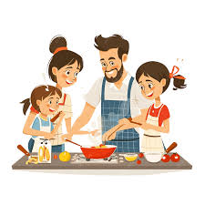

Playing/learning musical instruments

Learning to play a musical instrument involves acquiring the skills to perform music using tools such as the
piano,
guitar, violin, or drums. This hobby not only offers a creative outlet but also contributes significantly to
personal
development.
Benefits for 11- to 12-Year-Olds:
Cognitive Enhancement: Musical training engages both hemispheres of the brain, leading to improvements in
memory,
attention, and problem-solving abilities.
Academic Achievement: Studies have shown that students involved in musical activities often score higher on
standardized
tests, particularly in reading and mathematics.
Social Skills: Participating in group music-making fosters teamwork, communication, and a sense of
community.
Emotional Development: Music provides a means of self-expression, helping children articulate feelings and
build
self-confidence.
Introducing musical instruments as a hobby can be a fulfilling endeavor, offering a blend of enjoyment and
developmental
advantages.
Photography

Photography is a creative hobby that involves capturing images using cameras, enabling individuals to
document moments,
express artistic visions, and explore the world around them.
Benefits for 11- to 12-Year-Olds:
Creativity and Self-Expression: Photography encourages children to think imaginatively, allowing them to
express their
unique perspectives and ideas through images.
Mindfulness and Observation: Engaging in photography helps children become more attentive to their
surroundings,
fostering mindfulness and a deeper appreciation for everyday details.
Social Connections: Participating in photography can lead to new friendships and a sense of community, as
children share
their work and collaborate with others who have similar interests.
Physical Activity: Exploring different environments to capture photographs encourages physical movement,
contributing to
a healthier lifestyle.
Introducing photography as a hobby offers 11- to 12-year-olds a multifaceted activity that combines
creativity, personal
growth, and social engagement, enriching their developmental experiences.
Cooking or Baking

Cooking and baking are engaging hobbies that not only provide enjoyment but also offer numerous
developmental benefits
for 11- to 12-year-olds. Involving children in the kitchen fosters creativity, enhances practical
skills, and promotes
healthy habits.
Benefits for 11- to 12-Year-Olds:
Creativity and Imagination: Preparing meals and baking allow children to experiment with flavors,
textures, and
presentations, nurturing their creative expression.
Practical Life Skills: Cooking and baking teach essential skills such as measuring ingredients,
following recipes, and
understanding food safety, preparing children for independent living.
Healthy Eating Habits: By participating in meal preparation, children gain awareness of nutritious
ingredients and are
more likely to make healthier food choices.
Academic Skill Enhancement: Activities like measuring and timing during cooking and baking can improve
mathematical
abilities and understanding of scientific concepts.
Confidence and Responsibility: Successfully creating a dish boosts self-esteem and teaches
responsibility through tasks
such as planning, preparation, and cleanup.
Introducing cooking and baking as hobbies offers 11- to 12-year-olds a blend of fun and educational
experiences,
contributing positively to their personal growth and well-being.